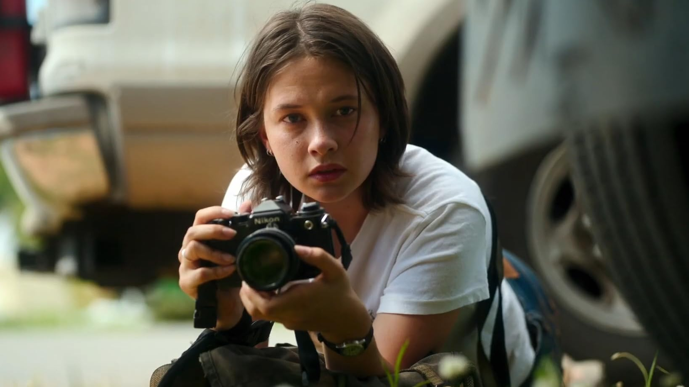

Civil War is a 2024 dystopian thriller film written and directed by Alex Garland, starring Kirsten Dunst, Wagner Moura, Cailee Spaeny, Stephen McKinley Henderson, Sonoya Mizuno, and Nick Offerman. The plot follows a team of war journalists traveling from New York City to Washington, D.C. during a civil war fought across the United States between a despotic federal government and secessionist movements, to interview the president before rebels take the capital city. Principal photography began in Atlanta, Georgia, in 2022, with production moving to London later in the year. Civil War premiered at South by Southwest on March 14, 2024, and was theatrically released in the United States by A24 and in the United Kingdom by Entertainment Film Distributors on April 12, 2024. With a budget of $50 million, Civil War is A24's most expensive film to date. The film has grossed over $122 million worldwide, becoming A24's second highest-grossing film, and received generally positive reviews from critics.

Foreign enlistment in the American Civil War (1861–1865) reflected the conflict's international significance among both governments and their citizenry. Diplomatic and popular interest were aroused by the United States' status as a nascent power at the time, and by the war's central cause being the globally divisive issue of slavery. Consequently, many men enlisted from abroad and among immigrant communities in the U.S.When hostilities first broke out, roughly 13% of Americans were foreign-born, the vast majority concentrated in northern cities; subsequently, foreign enlistment largely favored the Union, which was also far more successful at attracting volunteers.
1.Cailee Spaeny
2.Wagner Moura
3.Jesse Plemons
4.Kirsten Dunst
5.Sonoya Mizuno
Alex Garland
Henry Jack Man
Andrew Macdonald